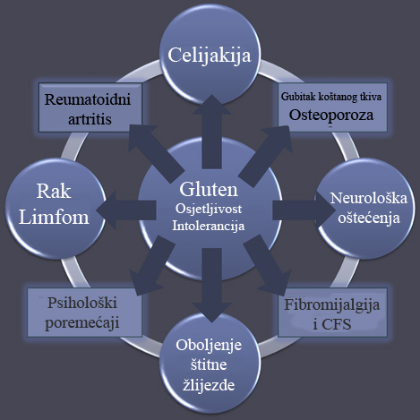
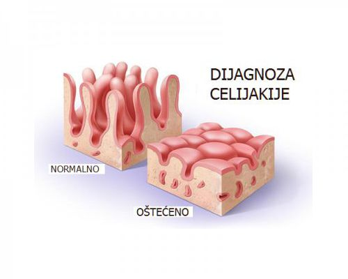

Nekada se je zvala „tipična“ celijakija. Ovaj oblik nije i ne smije se zvati tipičan jer se rjeđe pojavljuje. Karakteriziran je crijevnim manifestacijama bolesti kao što je malapsorpcija, prevladavaju probavni simptomi kao kronični proljev ili opstipacija, nenapredovanje na tjelesnoj masi, gubitak apetita, nadutost, umor, malaksalost, psihički problemi, gubitak tjelesne težine, bolovi u trbuhu, nadutost, povraćanje, nenapredovanjem u rastu i razvoju. Malo ljudi ima ovakve vidljivije i crijevne manifestacije bolesti, a bolest se u ljudi s tim tegobama lakše otkriva.
Karakterizirana je izoliranim, vancrijevnim manifestacijama bolesti. Probavni simptomi su minimalni ili odsutni. Najčešće se radi o kroničnom umoru, anemiji, mučnini, niskom rastu djece, odgođenom pubertetu, pretjeranoj nadutosti, vjetrovima, zatvoru, povraćanja, ponavljanje boli u trbuhu, nadutosti, nedostatku vitamina B12, glavobolji, iznenadna i neočekivana mršavljenja, afte u ustima, gubitak kose (alopecija), kožni osip (dermatitis herpetiformis), problemi sa zubnom caklinom, osteoporoza i /ili druge bolesti kostiju i zglobova.
Je u asimptomatskih bolesnika. Probavni simptomi su odsutni, a promijenjena je sluznica tankog crijeva. Tiha celijakija se najčešće dijagnosticira kod probira na celijakiju. Najznačajnija skupina iz koje se regrutiraju bolesni s tihom celijakijom su članovi obitelji oboljelih od celijakije (braća i sestre, roditelji ili djeca oboljelih). Sljedeće grupe u kojih treba tražiti tihu celijakiju su oboljeli od autoimunih bolesti te skupina bolesnika s genetskim poremećajima.
Karakterizirana je tipom 1 lezija sluznice po Marshu, modificirano po Oberhuberu. Bolesnici su pozitivni za anti-TTG IgA i/ili endomizijska protutijela.
Probavni simptomi su odsutni - Latentna celijakija označava normalnu sluznicu tankoga crijeva uz pozitivna protutijela i genetsku predispoziciju za celijakiju. Takve osobe mogu tijekom života, najčešće radi hrane bogate glutenom ,razviti i tipične histološke promjene sluznice. Kasniji razvoj promjena i smetnji.
Bolest otporna na isključivanje glutena iz prehrane Najčešće se javlja kod ponovnog uvođenja glutena na oporavljenu sluznicu. Iznimno je važno prepoznavanje i liječenje refraktorne celijakije jer nepravilno liječena može dovesti do nastanka limfoma - maligne bolesti limfnog sustava. Ako se potvrdi da je bezglutenska prehrana adekvatna, analiza dijagnostičkog postupka potvrdi definitivnu dijagnozu celijakije, a bolesnik i dalje ima , simptome bolesti, radi se o „odnosno refraktornoj celijakiji. Refraktorna celijakija češća je kod starijih bolesnika, a može se javiti u dva osnovna oblika.